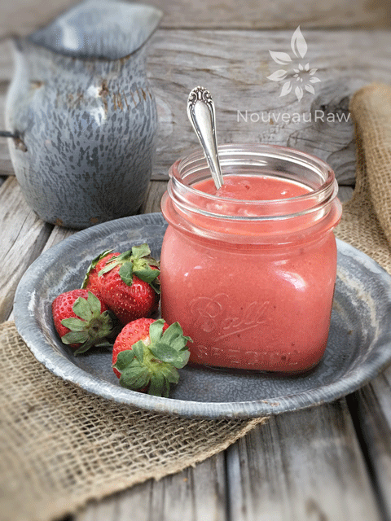
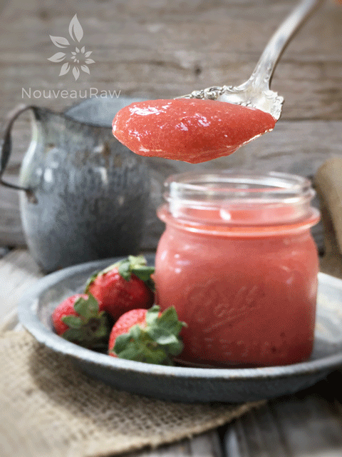

Rhubarb & Strawberry Sauce
~ raw, vegan, gluten-free, nut-free ~
When opposites attract, you end up with Rhubarb and Strawberry sauce. I think, by now, everyone knows that I am a big fan of both of them individually… but together they are pretty darn special.
Opposites sometimes tend to gravitate, much like in relationships. My husband I are actually quite opposite from one another but in such a way that it creates a wonderful balance between the two of us. I wouldn’t have it any other way.
Here, in this recipe, we have the sweet strawberries to help balance out the lip-puckering tartness of the rhubarb. I can’t express enough how important it is to use fresh, ripe fruits and veggies when creating recipes like this.
Tasteless produce will create tasteless dishes. Did you know that rhubarb is actually a veggie? I can’t say that I knew that… or that I didn’t… I’ve never really thought about it before I guess, but it’s good to know.
I grew up eating rhubarb-strawberry sauce, except it was cooked and loaded with tons of refined white sugar. Bless my Great Grandmother’s heart… she knew how to cook delicious foods but they suffered in the nutrition department. But where she may have lacked in that department, she made up with it by infusing her recipes with a bounty of love.
How to Enjoy…
This sauce can be blended into a silky smooth texture or you can leave chunks in it to give it that rustic flare. Both ways are wonderful. There are many awesome ways to enjoy this sauce. First and foremost… eat right out of the jar as is with a spoon. But it is also a perfect ice cream topping, add a dollop to your morning yogurt, or you can even spread it onto a dehydrator sheet and create a fruit leather. I hope you enjoy this simple but delicious recipe. Please comment below, I always love to hear from you. Blessings, amie sue
yields 4 cups
- 8 cups sliced rhubarb (roughly 13 stalks)
- 4 cups diced strawberries
- 1/2 cup maple syrup
Preparation:
- Wash and dry the rhubarb.
- Slice into 1/4″ slices, discard the leaves (they are toxic).
- Place the rhubarb, strawberries, and maple syrup in a ziplock bag, close, and shake, coating all the pieces.
- Pour everything into a glass container that will fit inside of the dehydrator, cover with plastic wrap, and slide the container into the bottom of the dehydrator. I use the Excalibur machine.
- Dehydrate at 115 degrees for 8 hours. The rhubarb will soften and create an extra sauce.
- The color will fade and the bitterness of the rhubarb will totally mellow.
- Use in recipes, eat alone, scoop over ice cream, or your favorite porridge.
- I like to blend half and stir in the chunky pieces for texture. Or blend it all into a smooth sauce.


© AmieSue.com